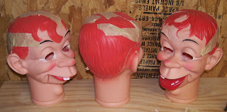

Heat stroke?
7/20/2011
With the current heat wave smothering much of the US, and warnings to both people and animals to protect themselves from extreme temperature, here's a reminder that the same is true for vent figures and puppets. And it is true for both soft puppets and hard figures. Over my career I've actually had to repair a good number of figures damaged by heat.
The three Mortimer heads in my shop now (pictured below) are case in point. They were stored for a time in an attic (not mine!) where summer temps reached deadly heights, even for a puppet. The owner was preparing to throw these dolls out when I asked if I could have them. They can be salvaged, but it takes a bit of time and work...more accurately, a bit of work and a lot of time.
First step is to remove the rubber bands connected to the mouth, since the tension of the band pulling on the mouth of a heat softened head is generally what distorts the head in the first place. Then the distorted material cools and remains misshappen. I reheat the head (not difficult these days!), and open it to add any inner supports needed to properly reshape the head, then reclose the head and let it cool and rest. I use masking tape to hold the various areas of the head and face in position as it cools. I prefer to let the head wait a good long time, weeks or even months, before doing any additonal work. The longer the material rests, the less likely it is to retain any "memory" to slowly return to the distorted condition.

(The eyes on these heads have been cut out in preparation for eventual moving eye upgrades.)Much better to care for the figures properly in the first place.